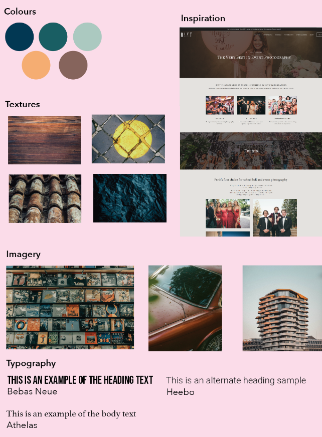
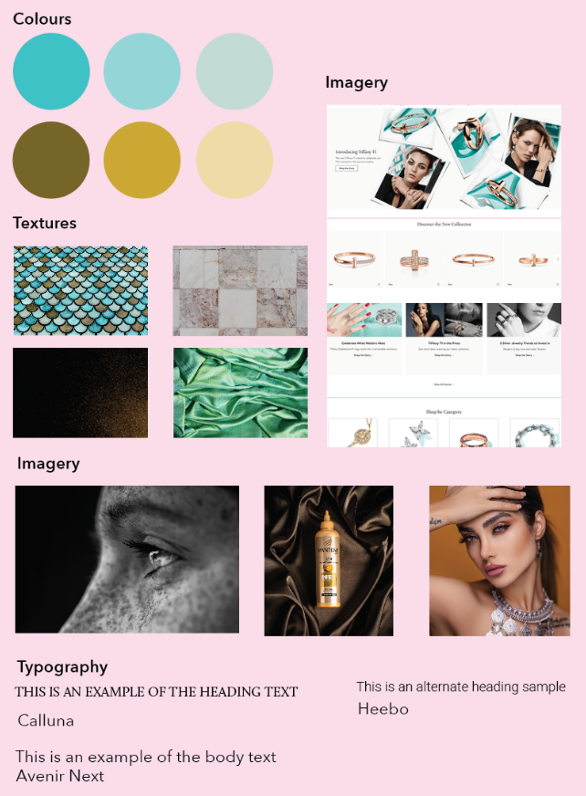
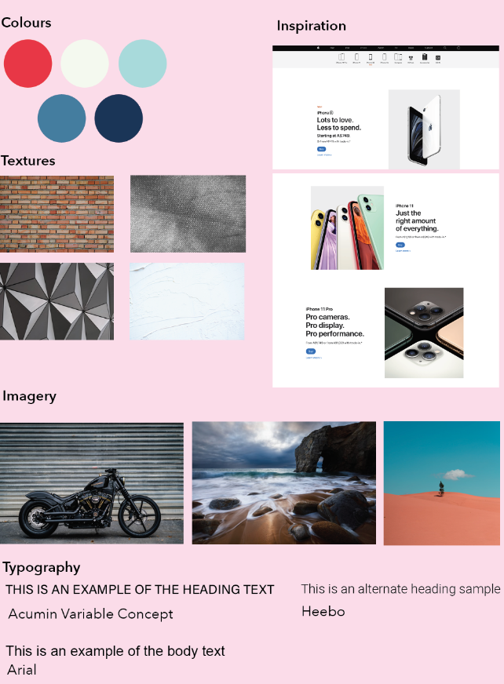
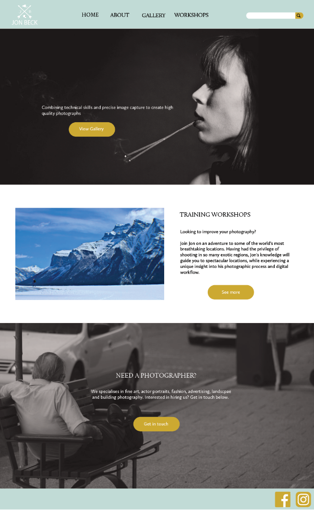
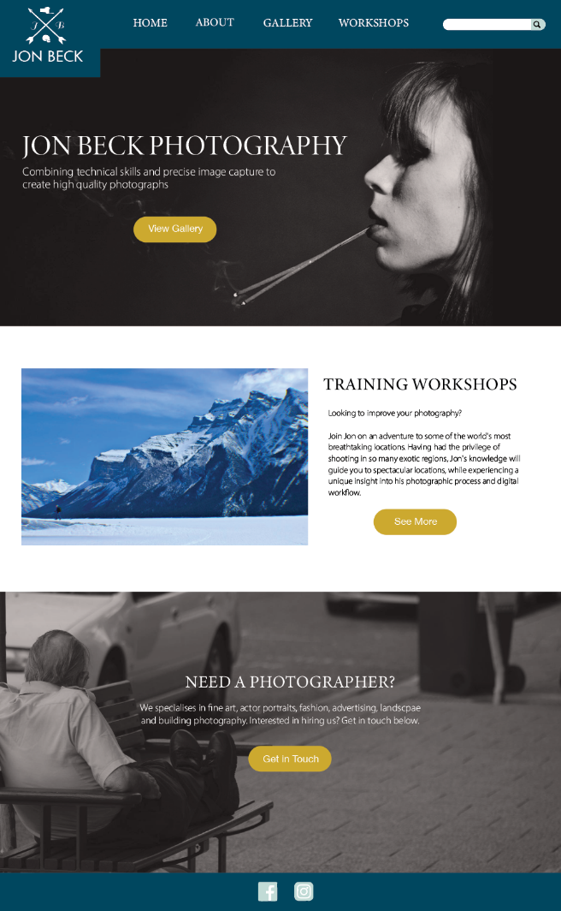
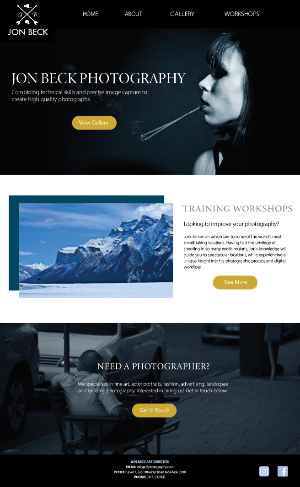
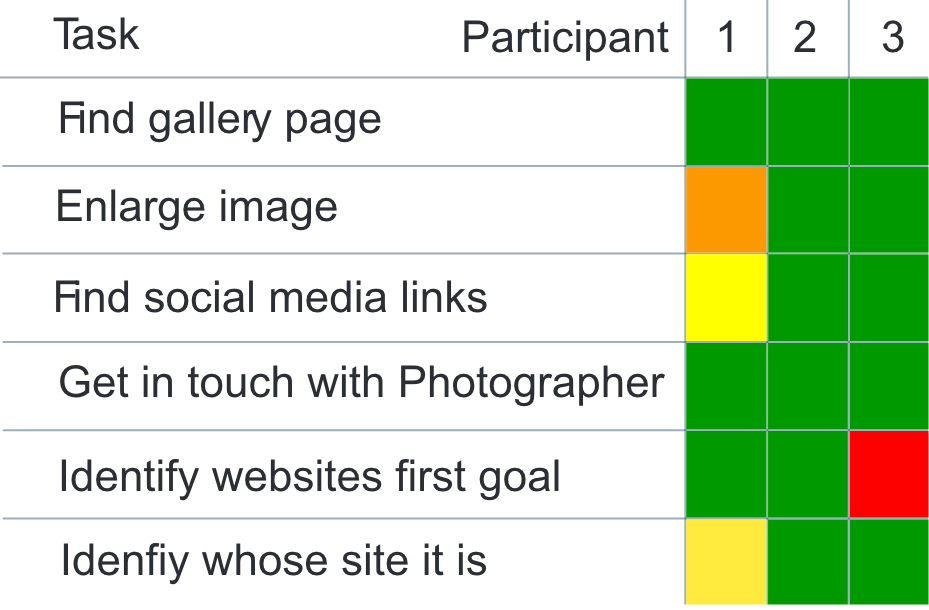
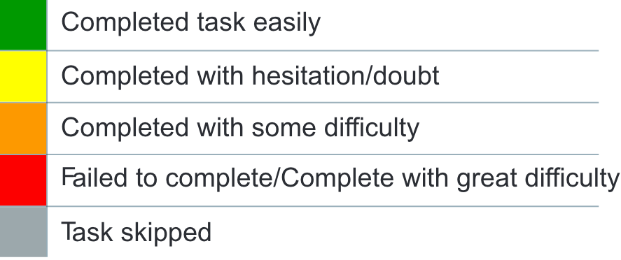

A WEBSITE FOR THE MAN BEHIND THE LENS: JON BECK PHOTOGRAPHY
Branding | Website design | Website development
Jon Beck is an award winning photographer specialising in fine art, actor portraits, fashion, landscape and building photography. Combining technical skills and precise image capture, Jon is able to capture beautiful photographs and sell these to others using the best quality printing and framing. Living in Queensland, Jon would like to reach audiences from all over Australia, and a website will enable him to do this. The Clients goals for this website include:
RESEARCH
The research stage includes defining the target audience and gaining a deeper understanding into the people affected by creating personas, empathy maps and conducting interviews. Competitors are also looked at to see what has been done in the past and whether or not these ideas have worked.
1. COMPETITOR ANALYSIS
I undertook a competitor analysis of two similar websites that showcase a photographers work. Within these websites, I was able to identify positive aspects to be used, as well as negative aspects to avoid. From these I found that a clean and sleek design is best to showcase this type of work and that a tagline and call to action are important to draw the user in.
COMPETITOR ANALYSIS 1 - RAE FALLON
https://raefallon.com
This website creates a personal feel. The pale blue and earthy colours as well as the script typography create an inviting feel. I think that this inviting feel would be something that parent would be attracted to. As parents are part of Jon Beck’s target audience, I will aim to create this personal feeling within the website design for Jon Beck. The navigation of this website may be confusing to users who are not tech savvy. There is no homepage button and instead the logo will take the user to the homepage when clicked on. In Jon Becks website, I will ensure that I include a button for the home page.
COMPETITOR ANALYSIS 2 - CHRISTIAN FLETCHER
https://christianfletcher.com.au
This website has quite a professional feel to it and displays the photographers work in a way that gives off a sense of pride. The design is very clean and sleek and uses lots of images to showcase the photographers work. I would like to use this sleek, modern feel in Jon Beck’s website to attract a distinguished target audience of high flying corporate and fashion clients. This website however lacks a tagline that would draw the viewer into the site. I will make sure to include a tagline and call to action within Job Becks website to draw the user in and establish a focal point. I like how the homepage is set out in rectangular sections and that the images have been given a square shape. It allows for an easy to follow design.
2. PERSONA
To understand what type of people would try to access this information and use this website, I created a persona. The target audience for this project consisted of high flying corporate and fashion clients who need photography work done, or parents and older adults looking to buy work for their houses.
2. PERSONA
To understand what type of people would try to access this information and use this website, I created a persona. The target audience for this project consisted of high flying corporate and fashion clients who need photography work done, or parents and older adults looking to buy work for their houses.
VISUAL INVESTIGATION
The visual investigation stage includes creating mind maps to help generate ideas for the development stage. During this stage, I also look at images, websites and other content found on the internet, as well as objects, books and other materials found in my surroundings to find inspiration.
1. VISUAL INVESTIGATION
I then started to look at the visuals of the website and created three different visual investigations to get an idea of what the basic look and feel of the website may look like. The chosen theme was labelled as ‘distinctive’ which combined visual elements in a unique and interesting way. Blue and gold colours were chosen to create a glamorous feel that would attract high flying corporate and fashion clients. A modern serif was chosen for the typography to help highlight this luxurious feel, a font that is often seen in luxury magazines.
HIPSTER
DISTINCTIVE
PROFESSIONAL
DEVELOPMENT
The Development stage includes creating rough sketches and refining them with computer software, as well as experimenting with different elements such as colour, grids, layouts, typography and images until an identity is created.
1. WIREFRAMES
With the basic research completed, I moved onto wireframes and creating the layouts for the the homepage. The layouts were created using adobe XD, showing how the page may look from different devices including computers, tablets and mobiles. These wireframes enabled me to focus on the content and create a structure that was easily readable and placed the content in a hierarchal manner. Although only the desktop view is shown, tablet and mobile views were also taken into consideration.
HOMEPAGE
1. The homepage has been kept simple and split into different sections for each of the different goals.
2. The logo was placed in the top left corner of the header so users know which website they have come to.
3. A search bar has also been placed in the top right corner of the header for users looking for specific information.
4. The main navigational links were placed underneath the header so that they could be easily accessed.
5. The large ‘hero’ image creates a focal point for the user, drawing their attention and leading them to the tagline and call to action taking the user to the gallery, which relates to the clients first goal of promoting work and selling photographs.
6. The second section of the homage related to goal two, promoting the training workshops, and section three directly related to goal three, hiring out the photographer.
7. These sections contain titles that are in a larger size and different font to the body text to ensure they stand out and the user can quickly find what they are looking for.
8. The footer contains links to the clients social media, providing other platforms for the user to view the photographers work.
HOMEPAGE
1. The homepage has been kept simple and split into different sections for each of the different goals.
2. The logo was placed in the top left corner of the header so users know which website they have come to.
3. A search bar has also been placed in the top right corner of the header for users looking for specific information.
4. The main navigational links were placed within the header so that they could be easily accessed.
5. The large ‘hero’ image creates a focal point for the user, drawing their attention and leading them to the tagline and call to action taking the user to the gallery, which relates to the clients first goal of promoting work and selling photographs.
6. The second section of the homage related to goal two, promoting the training workshops, and section three directly related to goal three, hiring out the photographer.
7. These sections contain titles that are in a larger size and different font to the body text to ensure they stand out and the user can quickly find what they are looking for.
8. The footer contains links to the clients social media, providing other platforms for the user to view the photographers work.
2. COMPOSITIONS
After this, development of the design compositions started to occur which combined both the wireframes and visual investigations and took into account the initial research into the audience and competitors.
The first composition I came up with utilised a wide variety of imagery to showcase the photographers skills. Lighter blue colours for the header and footer. However I felt that this colour did not match the darker blue within the middle image, so decided to change the colour of the header and footer to a darker blue. The tag line was also very small which was changed in the second composition
This second composition was more in-line with what I was aiming for. The large title placed over the hero image captured the viewers eye however the colours were used sparingly and the black and white pictures made the layout look uninteresting and uninviting.
I addressed these issue in the third composition, by bringing in more blue hues within the images themselves and changing the header and footer to black so they seemingly blended in with the images. This ensured the imagery linked together and helped to unify the website. These blue colours created a trustworthy feel as well as one of wisdom, which was appropriate for the client due to his knowledge in photographer. It created an inviting feel and contrasted against the gold call to action buttons, letting them stand out. An asymmetrical element of the layered squares was created In the second section to reflect a distinctive and fresh perspective, helping to hold the users interest.
COMPOSITION 1
COMPOSITION 2
COMPOSITION 3
TESTING
The testing stage is not necessary for all projects but includes testing the functionality and usability of outputs, especially in website and app design, and changing aspects of the design based on the test results.
1. USABILITY TEST
I conducted a usability test on the website to test the functionality of buttons and navigation as well as test the design to see if anything could be improved. The type of usability test conducted was an in person usability test in which the participant was encouraged to think out loud. Three participants were tested, their ages ranging from 22-52 all residing between the areas of Rockingham and Perth. The key findings from this usability test were that the design was very clear and easy to follow, the navigational links all worked and lead to the right webpages, and no major issues were found.
THE RESULTS
100%
of participants were able to complete all tasks and answer all questions.
0%
of participants had trouble finding the events page
33%
of participants thought the events page layout could be improved.
TASK ANALYSIS
 THE GOOD
Participants found the navigation of the website very clear and easy to understand. Relating to the questions about aesthetics, participants liked the colours used throughout the website as it created a professional and high quality feel. Participants also liked the layout of the homepage as the sections were clear and it lead them to more information and links. Participants also liked the images on the homepage as it gave an insight into the photographers work.
THE BAD
One participant did not like the scrolling on the front page, as it was very short and they felt limited. Another participant felt the social media links should also be at the top of the page, next to the main navigation, so they could be found more easily. They would also like more social media links (such as twitter) and an option with the social media links to share the website with others. Some participants had trouble identifying what the main goal of the website was.
RECOMMENDATIONS AND ACTIONS
To introduce more sections on the home-page to allow for more scrolling so it doesn't end suddently and users don’t feel limited. To have more social media links at the bottom of the page such as twitter and possibly Linked-In so users can look at all profiles. Also have an option where users can share the website with others.
DELIVERABLES
The deliverables includes the delivery of the final outcomes, outputs, products or identities. These outputs should address the issues raised within the problem statement.
1. THE FINAL WEBSITE
I have made a website that clearly communicates the clients goals through the website hierarchy, clear titles, use of colours, typography, imagery, proportion and proximity. The website design has also been catered towards the target audience of high flying corporate and fashion clients and parents with lots of call to action buttons to prompt them to take action.
1. THE FINAL WEBSITE
I have made a website that clearly communicates the clients goals through the website hierarchy, clear titles, use of colours, typography, imagery, proportion and proximity. The website design has also been catered towards the target audience of high flying corporate and fashion clients and parents with lots of call to action buttons to prompt them to take action.